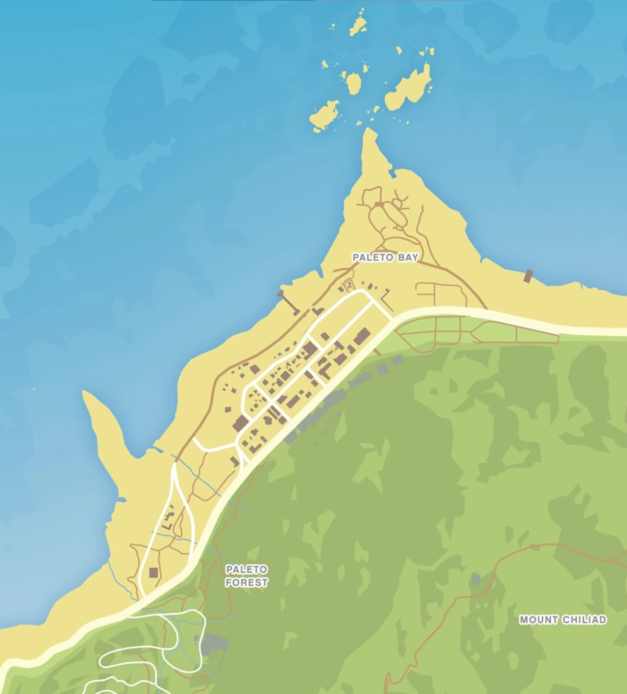
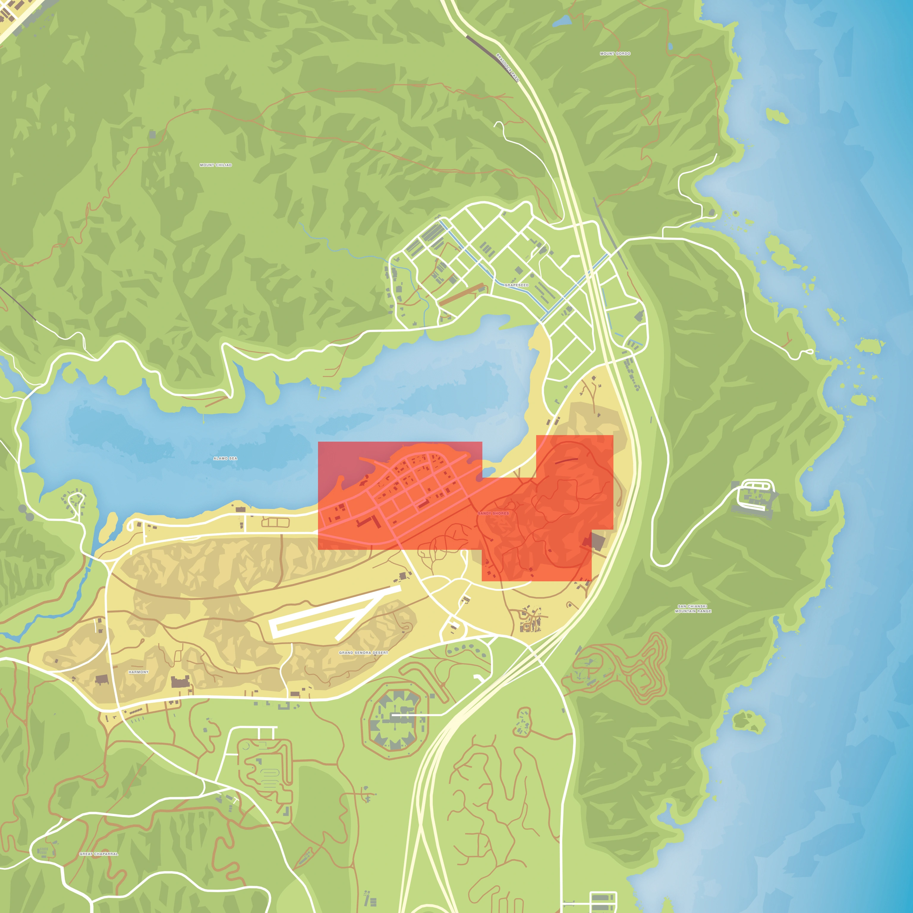
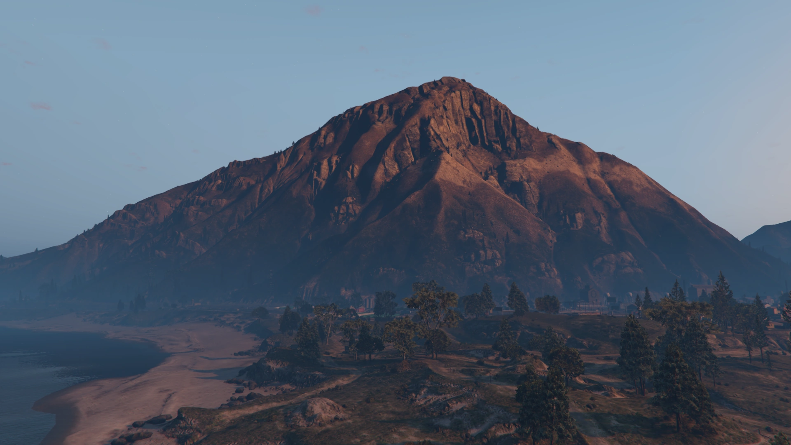

Paleto Bay es un pueblo ubicado en el condado de Blaine que aparece en Grand Theft Auto V y Grand Theft Auto Online. Está situado al noroeste del Monte Chilliad y del bosque de Paleto, al oeste de Procopio Beach y al este del océano Pacífico. Dista de aproximadamente 11 km al norte de Los Santos, y para llegar allá se puede optar por la Great Ocean Highway o las autopistas de Los Santos y Senora. Es principalmente una zona residencial con algunas tiendas.

Sandy Shores es un municipio ubicado en el estado de San Andreas en el condado de Blaine. Se encuentra a 6 km al noreste de Los Santos.La población de Sandy Shores se compone de 3010 personas que viven como "paletos" en cabañas y chozas. Uno de los tres protagonistas de Grand Theft Auto V, Trevor Philips vive en este pueblo.

El distrito del centro de Los Santos es el distrito financiero y la parte más interior de la gran área metropolitana de Los Santos. Esta área constituye el Downtown Los Santos. El distrito está delimitado por Del Perro Freeway al norte, La Puerta Freeway hacia el oeste, Olympic Freeway al sur y el Canal de Los Santos, al este.
El Monte Chiliad es una montaña que aparece en Grand Theft Auto V. Es más alta de el condado de San Andreas (V) y de la saga Grand Theft Auto, con una altura aproximada de unos 2.620m. Es una de las tres montañas de Blaine County, y pertenece a el Parque natural del monte Chiliad.

El Lago Zancudo es un terreno de humedales que se forma en la desembocadura del Río Zancudo al mar, ubicado al suroeste del Condado de Blaine.Para unos, un refugio natural; para otros, una ciénaga infestada de mosquitos. El humedal del Lago Zancudo no deja a nadie indiferente